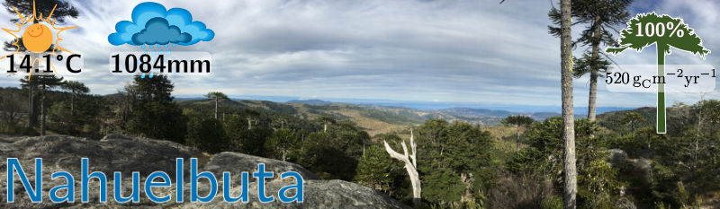
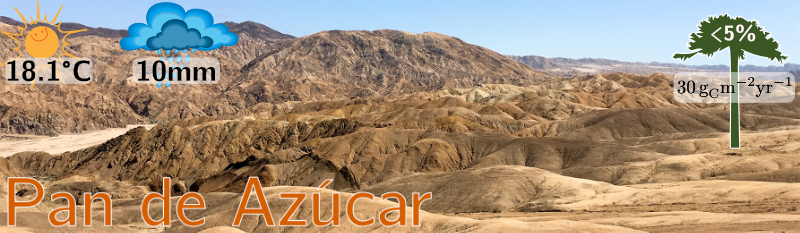
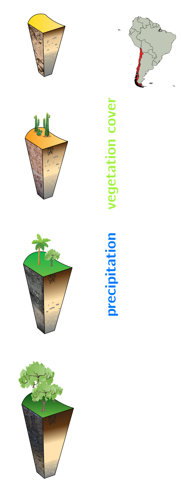
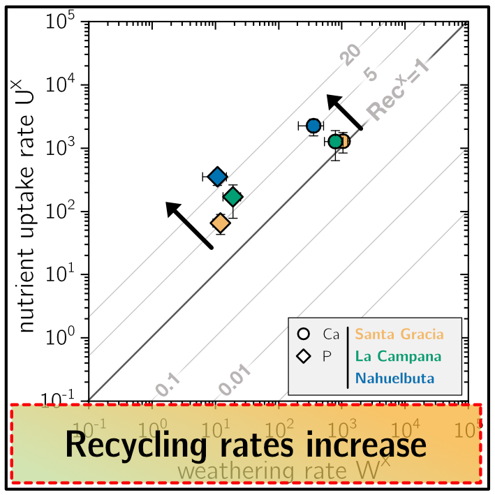
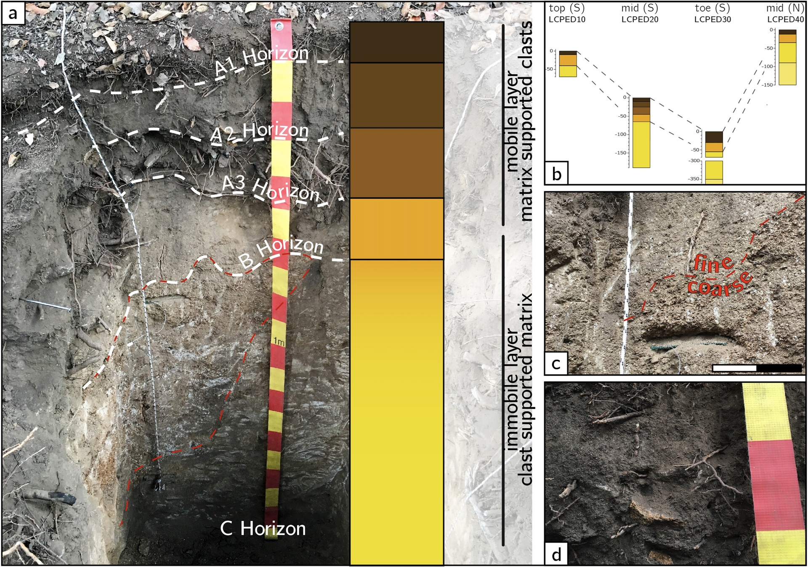
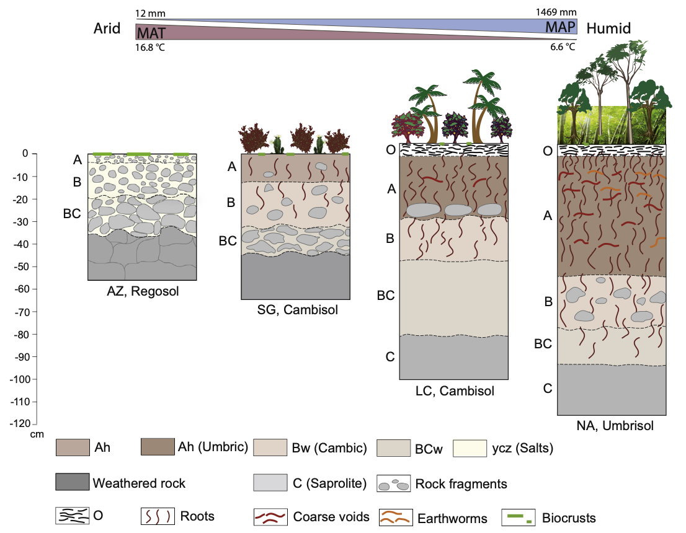
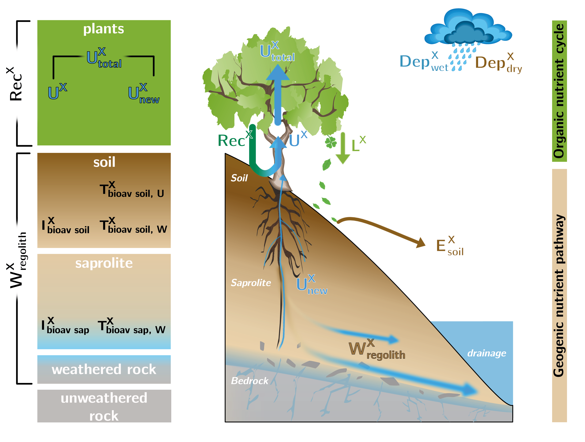
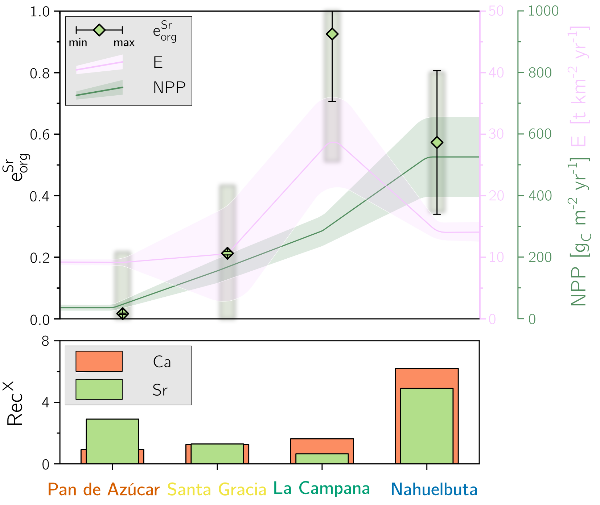
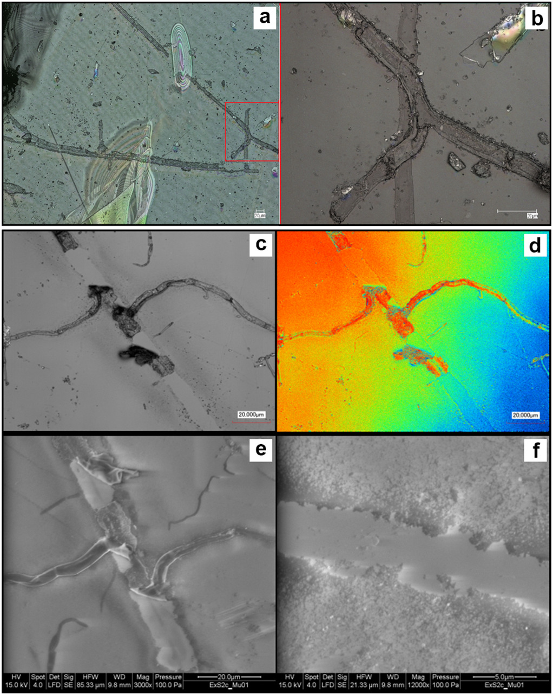

Oeser, Ralf A.:Metal isotopic fingerprinting of rock weathering and nutrient cycling along a climate and vegetation gradient
Refubium der Freien Universität Berlin, doi: 10.17169/refubium-28090, 2020




Dort, wo Gestein auf Leben trifft, in der sogenannten „Critical Zone“ zwischen Felsuntergrund und Baumkrone, entscheidet sich, woher Pflanzen ihre Nährstoffe bekommen. Bisher galt: Je mehr Pflanzen wachsen, desto stärker lösen sie das Gestein an, um an Nährstoffe wie Calcium, Kalium oder Phosphor zu kommen. Das habe ich an vier Standorten in der chilenischen Küstenkordillere überprüft, von der fast kahlen Wüste mit 10 mm Regen im Jahr bis zum dichten, feuchten Wald mit über 1.000 mm, alle auf ähnlichem Granitgestein. Dafür habe ich Gestein, Boden und Pflanzen chemisch untersucht und Strontium-Isotope wie einen Fingerabdruck genutzt, um zu verfolgen, woher die Nährstoffe in der Pflanze stammen. Das überraschende Ergebnis: Das Gestein gibt fast überall ungefähr gleich viele Nährstoffe ab, und die Pflanzen brauchen deutlich mehr, als die Verwitterung nachliefert. Diese Lücke schließen sie durch Recycling: Je üppiger der Wald, desto öfter wird jeder Nährstoff aus dem abgefallenen Laub wiederverwertet, bevor er verloren geht. Der Isotopen-Fingerabdruck zeigt außerdem, dass Pflanzen bevorzugt „leichtes“ Strontium aufnehmen und dass an steilen Hängen die Erosion Laub und damit Nährstoffe wegträgt, was das Recycling schwächt. Wie schnell Gestein verwittert, hängt deshalb vor allem von seinen Mineralen ab, und im feuchten Wald setzen Pilze und Mikroben sogar eher auf Wiederverwerten als auf das Auflösen von Gestein. Das Wachstum der Pflanzen ist also weitgehend davon abgekoppelt, wie stark das Gestein verwittert. Höhere Pflanzen treiben den weltweiten Verwitterungskreislauf, der langfristig CO₂ aus der Luft bindet, daher womöglich weniger an als bisher gedacht.
Oeser, Ralf A. & Stroncik, Nicole & Moskwa, Lisa-Marie et al.: Chemistry and microbiology of the Critical Zone along a steep climate and vegetation gradient in the Chilean Coastal Cordillera
Catena 170, 183-203, doi:
10.1016/j.catena.2018.06.002, 2018

Mit 16 Bodenprofilen von der chilenischen Wüste bis zum feuchten Wald zeigen wir, dass das Klima bestimmt, wie dick die Böden werden, wie stark das Gestein verwittert und wie viele Mikroben im Untergrund leben. Damit liefert das Paper den Grunddatensatz, auf dem alle späteren EarthShape-Arbeiten zur Rolle der Pflanzen bei der Verwitterung aufbauen.
Bernhard, Nadine & Moskwa, Lisa-Marie & Schmidt, Karsten & Oeser. Ralf A. et al.: Pedogenic and microbial interrelations to regional and local topography: New insights from a climate gradient (arid to humid) along the Coastal Cordillera of Chile
Catena 170, 335-355, doi:
10.1016/j.catena.2018.06.018, 2018

Entlang des chilenischen Klimagradienten zeigen wir, dass vor allem das Klima steuert, wie sich Böden und ihr Mikrobenleben entwickeln: Je feuchter, desto tiefer der Boden und desto mehr Ton, Humus und Mikroben-DNA, während pH-Wert und Nährstoffvorrat sinken. Zwischen Wüste und Halbwüste gibt es dabei einen scharfen Umschlagpunkt, weshalb Böden in diesem Übergangsbereich besonders empfindlich auf Klimaveränderungen reagieren.
Oeser, Ralf A. & von Blanckenburg, Friedhelm: Do degree and rate of silicate weathering depend on plant productivity?
Biogeosciences Discuss., doi:
10.5194/bg-17-4883-2020, 2020

Obwohl Niederschlag und Pflanzenwachstum entlang des chilenischen Klimagradienten um das Fünffache zunehmen, verwittert das Gestein nicht schneller, denn die Pflanzen decken ihren wachsenden Nährstoffbedarf durch schnelleres Recycling aus dem Laub. Wir vermuten deshalb, dass Pflanzenwachstum die Verwitterung sogar dämpfen könnte, was die gängige Annahme infrage stellt, Pflanzen würden den weltweiten Kreislauf aus Verwitterung und CO₂ antreiben.
Oeser, Ralf A. & von Blanckenburg, Friedhelm: Strontium isotopes trace bilogical activity in the Critical Zone along a climate and vegetation gradient,
Chemical Geology, doi:
10.1016/j.chemgeo.2020.119861, 2020

Mit Strontium-Isotopen als Fingerabdruck zeigen wir, dass Ökosysteme einen erheblichen Teil ihrer Nährstoffe nicht nur gelöst im Wasser verlieren, sondern auch als festes Pflanzenmaterial wie Laub, das vor allem an steilen, schnell erodierenden Hängen abgetragen wird. Dieser Export schwächt das Nährstoffrecycling deutlich, im feuchten Wald etwa um die Hälfte, und betrifft vermutlich nicht nur Strontium, sondern auch andere Nährstoffe.
Fleck, Doreen, ..., Oeser, Ralf A. & Boy, Jens: Weathering by mycorrhizal fungi defines a threshold for nutrients in ecosystems along an aridity gradient
Science of The Total Environment., doi:
10.1016/j.scitotenv.2025.179891, 2025

Mit Mineralen, die wir in Netzbeuteln entlang des chilenischen Klimagradienten bis in die Atacama-Wüste vergraben haben, zeigen wir, dass Mykorrhiza-Pilze in trockenen Gebieten das Gestein anteilig sogar stärker anlösen als im mediterranen Klima, und das gleichmäßig bis in 2,3 m Tiefe. Wüstenpflanzen stecken also vergleichsweise mehr Energie in die Verwitterung, vermutlich um auch in langen Trockenphasen an Nährstoffe zu kommen.
Oeser, Ralf A. & Stroncik, Nicole & Moskwa, Lisa-Marie et al.: Data supplement to: Chemistry and microbiology of the Critical Zone along a steep climate and vegetation gradient in the Chilean Coastal Cordillera
GFZ Data Services, doi:
10.5880/GFZ.3.3.2018.001, 2018
Bernhard, Nadine & Moskwa, Lisa-Marie & Schmidt, Karsten & Oeser. Ralf A. et al.: Data supplement to: Pedogenic and microbial interrelations to regional and local topography: New insights from a climate gradient (arid to humid) along the Coastal Cordillera of Chile
GFZ Data Services, doi:
10.5880/GFZ.5.3.2018.001, 2018
Oeser, Ralf A. & von Blanckenburg, Friedhelm: Dataset for evaluation element fluxes released by weathering and taken up by plants along the EarthShape climate and vegetation gradient
GFZ Data Services, doi:
10.5880/GFZ.3.3.2020.003, 2020
Hädecke, Sylvi & Oeser, Ralf A. & Rommel, Axel & Ussath, Maria & Hübschmann, Matthias: 3D-Untergrundmodell Lugau/Oelsnitz – Neubewertung und Aktualisierung bezogen auf aktuelle Fragestellungen des Nachbergbaus
LFULG Sachsen, 2021
Oeser, Ralf A. & Schuessler, Jan A. & Floor, Geerke H. & von Blanckenburg, Friedhelm: Sr isotope characterization of atmospheric inputs to soils along a climate gradient of the Chilean Coastal Range
EGU General Assembly 2017
Oeser, Ralf A. & von Blanckenburg, Friedhelm: Radiogenic and stable Strontium isotopic fingerprints of ecosystem nutrition - A case study featuring a climate and vegetation gradient along the Chilean Coastal Cordillera
GeoMünster 2019
Oeser, Ralf A. & von Blanckenburg, Friedhelm: Decoupling primary productivity from silicate weathering – how ecosystems regulate nutrient uptake along a climate and vegetation gradient
EGU General Assembly 2020, doi: 10.5194/egusphere-egu2020-8801
Oeser, Ralf A. & von Blanckenburg, Friedhelm: Does plant growth accelerate weathering?
Goldschmidt 2021